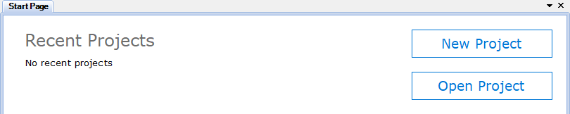
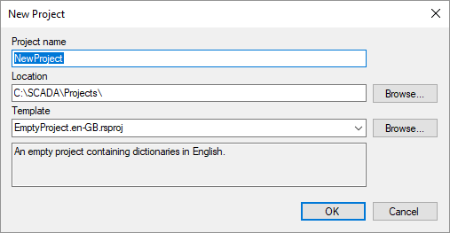

Figure 3. Project structure
Configuration of Rapid SCADA is performed on a project basys. A project is a set of files in various formats that are stored in the project directory. To create and edit projects, use the Administrator application. When Administrator starts, the Start page opens, which contains the buttons to create a new or open an existing project (see Figure 1).

Figure 1. Start page

Figure 2. Project creation form
Pay attention to the Template field of the project creation form (see Figure 2). The template defines the initial configuration that is added to the project. Another existing project can be used as a template.
Rapid SCADA configuration is displayed in the project explorer, which is located in the left part of the main Administrator window. The project consists of the following main parts (Fig. 3):
Figure 3. Project structure
An instance is a computer on which Rapid SCADA is deployed. A single project can include multiple instances of Rapid SCADA that exchange data. The Administrator application can connect to remote servers for downloading and uploading configuration, therefore, Rapid SCADA can be configured using one workstation.
Starting to work with Rapid SCADA, it is recommended to follow the general configuration sequence described below. Having obtained some experience, better understanding the dependencies between the applications, the sequence can be varied to increase efficiency.
 and
and  buttons located on the Administrator's toolbar.
buttons located on the Administrator's toolbar. button.
button. button.
button.